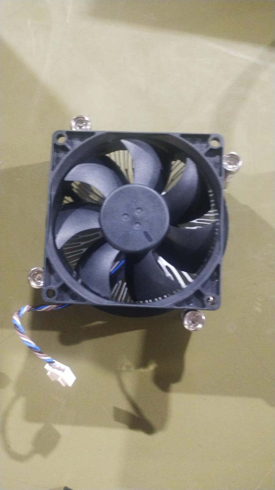
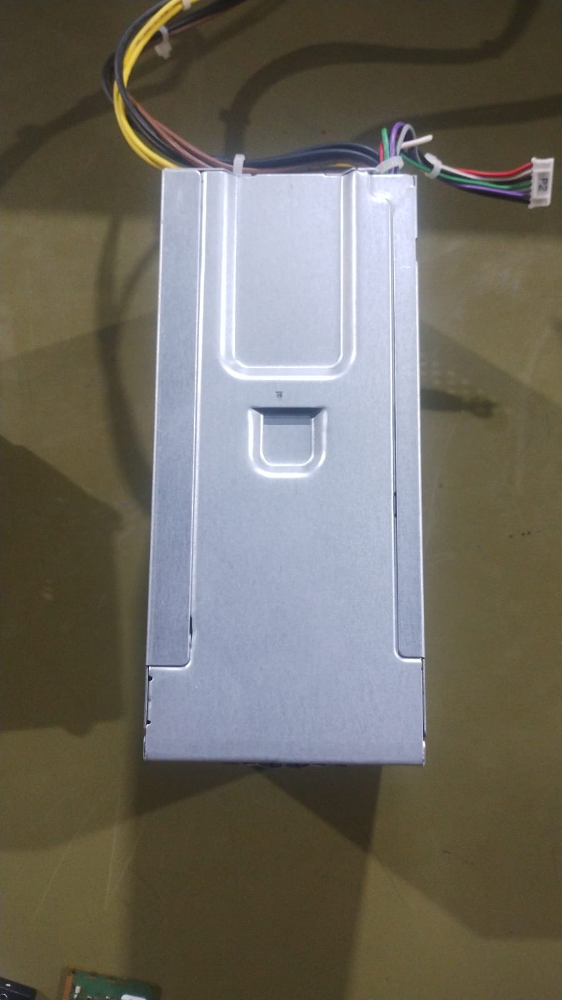
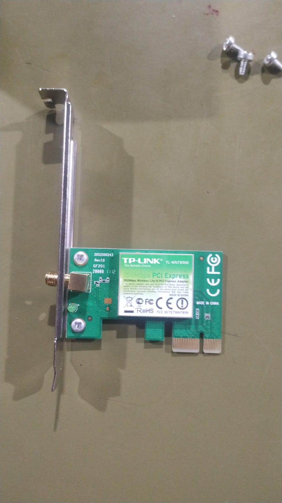
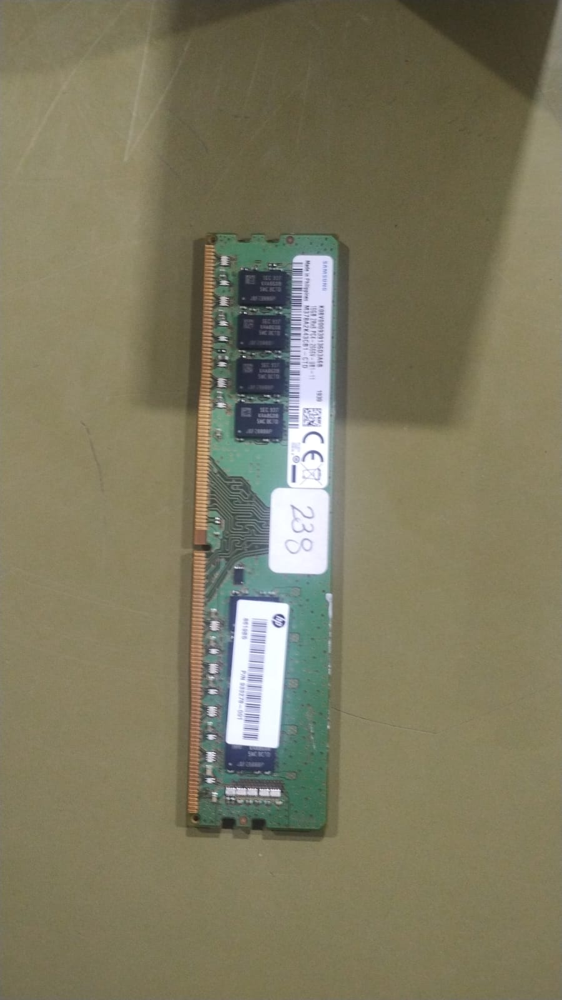
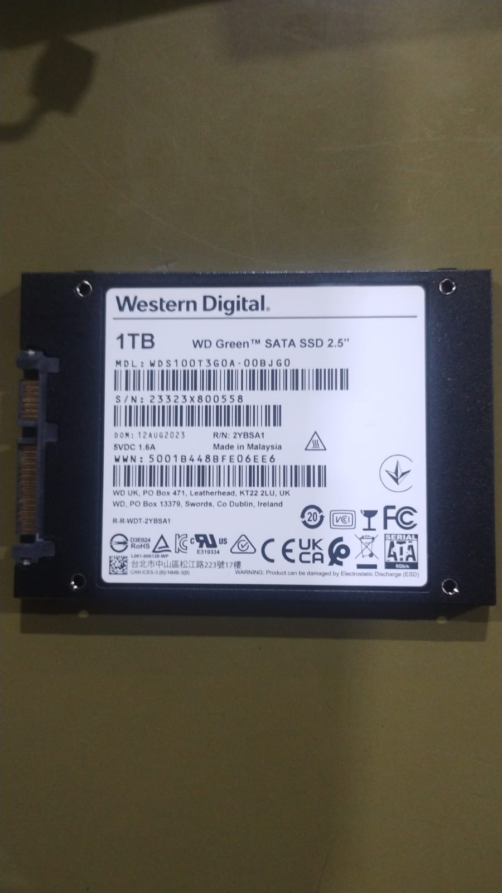
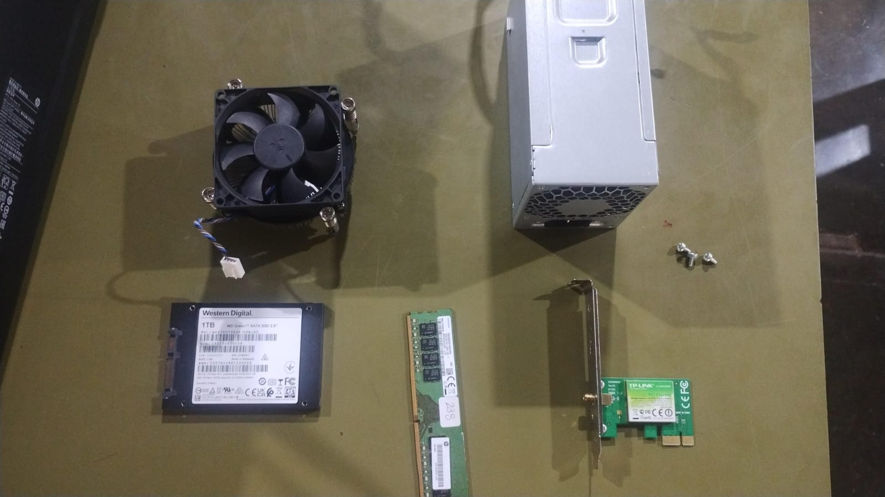
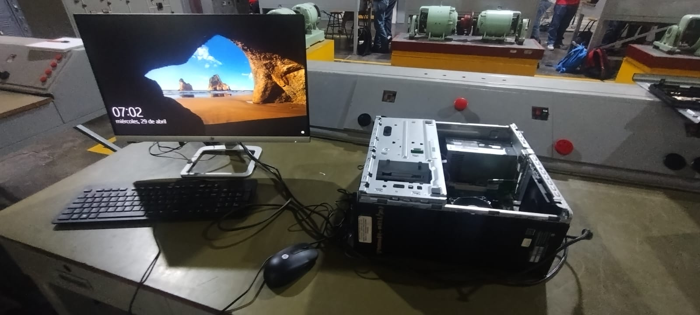

Práctica 4: Ensamble y verificación de equipo de cómputo
Disipador
Encargado de mantener la temperatura del procesador dentro de rangos seguros.
Puede ser de aire (ventilador + aletas metálicas) o líquido.
Su correcta instalación evita sobrecalentamiento y fallos en el sistema.

Fuente de poder
Convierte la corriente alterna (AC) en corriente directa (DC).
Distribuye energía a la tarjeta madre, disco duro, tarjeta gráfica y demás periféricos.
La potencia debe ser suficiente para el hardware instalado (ej. 500W, 750W).

Tarjeta gráfica
Procesa y genera las imágenes que se muestran en el monitor.
Puede ser integrada o dedicada (PCI Express).
Es esencial para aplicaciones de diseño, juegos y tareas gráficas intensivas.

Memoria RAM
Almacena datos temporales que el procesador necesita de manera rápida.
DDR3, DDR4 o DDR5 según la compatibilidad de la tarjeta madre.
A mayor capacidad y velocidad, mejor rendimiento en multitarea.

Disco duro / SSD
Almacena el sistema operativo, programas y archivos.
Los HDD son mecánicos, mientras que los SSD son más rápidos y resistentes.
Un SSD mejora el arranque y la carga de aplicaciones.

Equipo funcionando
Después de desarmar y volver a armar el equipo, se verificó que todos los componentes funcionaran correctamente.
El sistema encendió y se comprobó la estabilidad del hardware.


Regresar